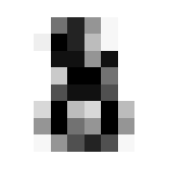

TL;DR
The best way to learn is to teach, so in this post I try to teach the reader how my first neural network implementation works! Part 2 of 2. I built this in following along with the awesome lessons over at fast.ai. Many thanks to that team.
Overview
We’re going to jump in where we left off in Part 1: We’ll just reimport our data, and get into it.
What?
We’re going to create a neural network that, given a picture of a numeric digit, identifies the number.
Why?
Does this really need explaining? Because the technology is amazing in both practical and philosophical ways.
Who?
Who am I!? Who are you?!
How?
Using PyTorch1, an opensource toolkit for building neural networks. Truly an elevator ride up onto the shoulders of giants.
Code Review
We’ll first just re-import our data, and then get into building the groundwork for our neural network
Let’s get into it!
The required dependencies!:scikit-learn, fastbook, matplotlib
Data Acquisition
A quick flashback to Part 1 of my Building A Digit Classifier blog!:
Pre-processing data before even touching any neural net methods can improve your final performance. Note the data set information offered at the source page:
We used preprocessing programs made available by NIST to extract normalized bitmaps of handwritten digits from a preprinted form. From a total of 43 people, 30 contributed to the training set and different 13 to the test set. 32x32 bitmaps are divided into nonoverlapping blocks of 4x4 and the number of on pixels are counted in each block. This generates an input matrix of 8x8 where each element is an integer in the range 0..16. This reduces dimensionality and gives invariance to small distortions.
Code
mnist = load_digits()
stacked = []
# This loop because stacked=[[]]*10 makes 1 list in list, with 10 copies of pointers... need separate objects
for i in range(10):
stacked.append([])
# Assign all images to the right collection in the 'stacked' list, indexed by target
for i in range(len(mnist["target"])):
stacked[mnist["target"][i]].append(mnist["images"][i])Segmentation
The next step is to define which data will be our training, and our validation set. It was important to bucket out our data first so by randomly sampling our data we didn’t generate a validation set with a large imbalance in the number of classes to be tested in it.
First we convert to a tensor, then segment training from validation data. Arbitrarily taking 20 examples from each digit, so, 11.5% of the total data set towards validation.
We’ll print out the size of these collections and take a peek at a sample to make sure we indexed right.
Code
# To make dataset a tensor, make it same number of dimensions
stacked = tensor([x[:174] for x in stacked])
# Segmentation: Pull 20 of each digit out of training set
test = [dig[-20:] for dig in stacked]
train = [dig[:-20] for dig in stacked]
# Confirm counts of samples
[len(test[i]) for i in range(10)], [len(train[i]) for i in range(10)]
show_image(stacked[3][0]) # Check sample<Axes: >
Nice.
It’s important to keep track of what’s what.
(list, torch.Tensor, torch.Tensor, [list, torch.Tensor, torch.Tensor])Ok so our top level containers for training/testing data are basic python lists. Within those, we have 10 collections, one for each integer. Those are Tensors. And then, each image (a collection of pixels unto itself) within those tensors, are also Tensor type objects.
Instead of a basic Python list, we will need the top level containers as tensors to leverage the pyTorch functionality built into them. luckily it’s an easy conversion:
Code
(torch.Size([10, 154, 8, 8]), torch.Size([10, 20, 8, 8]))Now here is a critical piece, working with multidimensional arrays and keeping in mind what we understand these to be. Our test and training tensors have the same dimensionality but not the same size.
Setup DataLoaders
First get data into the requisite shape for the processes that will follow.
Code
# Build training/valid sets for passing to DataLoader
train_x = torch.cat([x for x in train]).view(-1, 8*8)
test_x = torch.cat([x for x in test]).view(-1, 8*8)
train_y, test_y = [], []
for n in range(10):
train_y.extend([n]*154)
test_y.extend([n]*20)
train_y = tensor(train_y).unsqueeze(-1)
test_y = tensor(test_y).unsqueeze(-1)
train_x.shape, test_x.shape, train_y.shape, test_y.shape(torch.Size([1540, 64]),
torch.Size([200, 64]),
torch.Size([1540, 1]),
torch.Size([200, 1]))Note the unsqueezing such that the _y tensors have a singleton dimension. Might seem strange on first blush but makes sense when considering that our ‘target’ just happens to be individual integers. But in other use cases, the target could be something more complex, requiring a larger data structure. In which case that dimension could be larger than a singleton.
Now we can prime our DataLoaders. DataLoaders are a super handy object from the Pytorch library that will make life easier by holding our data for us, and serving it up in randomized batches.
Code
# Zip each input data item to its target output
dset = list(zip(train_x, train_y))
valid_dset = list(zip(test_x, test_y))
# Define DataLoader objects to pass to learner
dl = DataLoader(dset, batch_size=25, shuffle=true)
valid_dl = DataLoader(valid_dset, batch_size=5, shuffle=true)
dls = DataLoaders(dl, valid_dl)Laying The NN Foundations
Every NN needs weights and biases. We’re going to want to initialize lots of them, and in differently shaped structures, so first we define a function to help us do that:
Note that any memory structures created with that function will also store their gradient in memory as computation is performed on them. This will be critical to executing back propagation of the gradient so as to optimize our function.
Now we can generate our weights and biases. We define the structure sizes with our input and output size in mind, and the principles of matrix multiplication.
The general structure we will start with will be, of course, an initial layer with one neuron for each input, which will yield a single activation per input. After a nonlinearty, the second layer will have 10 weights and biases, such that the output is a 1D vector of size 10, per input. Each output neuron will represent an estimation of likelihood that the integer is that which the neuron represents (0-9).
Figure 2 shows the start of the proces… A row in the input batch represents a single image. At the end of the 1st layer, it is reduced to a single activation value to be passed through a non-linearity prior to going through the 2nd layer

Never fear! It’s easy. I never forgot the trick Dr. Mohammed Jaber taught us 4th year as we had to use these methods from first year: ROW. COLUMN.
Take row i from the first matrix, and column j from the second. The element in index i,j of the resulting matrix will be the dot product of that row and column vector.
- Layer 1:
- 64 weights, one per pixel. Formatted in a column vector because they are the second term in the matrix multiplication equation, with a single input (image) being fed as a single row vector of 64 elements, one per pixel.
- 1 bias; it will be broadcast such that the same bias is added to all instances in our batch. See Figure 2
- Layer 2:
- 10 weights, to generate one output neuron per category/class to assign.
- 1 bias, to be broadcast across each input vector.2
We will use the basic ReLU activation function as the non-linearity between the two linear layers.
Building the NN
Similarly to our parameter generation function, we want o make our little network into a function block so that we can treat it as a black box to plug and play with other code sections:
Let’s take it for a spin! We’ll manually identify a subset of our training dataset for testing purposes.
(tensor([[ 0.0392, 0.0968, -0.1264, -0.0286, -0.1667, -0.0667, -0.0731, 0.0230, -0.0675, -0.1758],
[ 0.2856, 0.4509, -0.1896, 0.0910, -0.3052, -0.0182, -0.0367, 0.2391, -0.0206, -0.3315],
[ 0.1481, 0.2533, -0.1544, 0.0243, -0.2279, -0.0452, -0.0570, 0.1185, -0.0468, -0.2446],
[-0.0926, -0.0926, -0.0926, -0.0926, -0.0926, -0.0926, -0.0926, -0.0926, -0.0926, -0.0926],
[ 0.2645, 0.4205, -0.1842, 0.0808, -0.2933, -0.0223, -0.0399, 0.2206, -0.0246, -0.3181]], grad_fn=<AddBackward0>),
torch.Size([5, 10]))Excellent! For the 5 input images passed in, we have an output that is 5 vectors of size 10, that is, each input has 10 output values, one for each possible classification outcome 0 through 9.
And note that the result tensor retains the gradient! This comes into play in the next step.
Calculating Loss
Loss is the measure of the neural networks success. The most critical characteristic of a loss function is that it be differentiable with a smooth gradient. But just because the math doesn’t break doesn’t mean the function will eb any good. There are a variety of well understood functions that can be used, with selection being a matter of preference as well as the use case at hand.
Since we are assigning a single class to the input, from multiple options, we’ll use the SoftMax function. It reduces all outputs to a number between 0 and 1, with a given number being exponentially closer to one, the larger it is compared to the other numbers in the set.
This is a double-hitter: it allows the net to learn to win by giving the correct digit’s output neuron the highest activation, while also motivating the reduction in activation of the incorrect neurons.
Keep in mind that we need to ensure these functions can work with different batch sizes. Fortunately, the PyTorch built in functions are designed for this.
Our function first takes the SoftMax of the outputs for each input. Then, it pulls out the resulting value for the index of the correct class. Recall, this will be a number between 0 and 1. If we took this number alone as our loss, measure, there would be a couple of issues.
First of all, convention is that we want to reduce loss in the course of our optimization. But we have defined the index of the highest softmax result as our classification integer. So that doesn’t jive. Secondly, it isn’t desirable to have the measure of loss constrained to such a small range 0 to 1, because this essentially reduces the information we’re getting - large differences in inputs will show very small changes in loss. For effective learning, we would want a strong learning signal, i.e. small changes to input parameters reflecting meaningful differences in the measure of loss.
The solution? First, taking the log of the SoftMax activation. As the following code shows, a difference of 0.001 in the input to the log function creates a differences of more than 0.01 in the output, an order of magnitude difference.
After the log, we took the negative of those values. That’s because the log of a number between 0 and 1 will always be negative, getting absolutely larger the further from 1 it is. Seeing as we want the output to be absolutely smaller the closer to 1 it is, taking the negative accomplishes this perfectly.
Lastly, we summed the loss measure across the samples in the mini batch since we want to optimize globally, not just for individual samples.
So let’s test it!
Code
tensor([10.7966], grad_fn=<AddBackward0>)This output might look nice, but it’s a roll of the dice!
While the formula for the SoftMax is easy enough to understand, Our home-brewed version won’t work. I tried to do so at first and had all kinds of headaches arising from arithmetic underflow in the outcomes! How the hell do you deal with that? The best solution: Use the function implementation baked into the PyTorch libraries! Let the pro’s handle those deep issues. We’re still riding on training wheels!
It turns out the -log of the SoftMax is the Cross Entropy Loss Function. And just importing it from the PyTorch library will save us from the pitfall described in the preceding blurb… So here is our final loss function!
Now if you’re reading this you’re probably thinking that gradient descent is the next step here, so as to reduce the loss between minibatches, but we’ll take a quick detour first.
Measuring Accuracy
Before going further, let’s take a minute to set up some functions we’ll need in the training process. The first yields the percentage accuracy of the model across a batch, and the second function builds on that to iterate across the batchers in our valdiation set and yield the accuracy rate across a whole epoch3.
Code
def batch_accuracy(mdl, xb, yb):
otpts = mdl(xb) # Get output activations from model
# The indices of the max activation is the predicted digit of the input
preds = otpts.max(dim=-1).indices
# Types must be tensors to return sequence of true/false
correct = preds == yb.view(-1)
# Use view to take it from shape=[5,1] to [5], same as preds. else will broadcast and end result all messed up
return correct.float().mean()
def validate_epoch(mdl):
outcomes = [batch_accuracy(mdl, xb, yb) for xb, yb in valid_dl]
return round(torch.stack(outcomes).mean().item(), 4)It’s always good to double check these functions are working as intended after making them… Let’s grab some validation set data, double checking along the way that the outputs (integer assignment) match the input (drawings of digit):
Code
8
3
0
2
5


Ok nice, now lets see that our validation function is yielding the correct accuracy score on classifying a mini batch. Since we haven’t trained the model yet we’ll expect the performacne to be junk but that doesn’t mean we can’t test the % accuracy function.
Code
tensor([1, 1, 1, 1, 1]) tensor([[8],
[7],
[2],
[2],
[8]]) tensor(0.)We want to see the last number spit out be an accurate representation of how many numbers match between the first and second tensor output. I don’t know what the final blog output will be since the inputs to the neural net are random every time, but I re ran this code cell a number of times, seeing correct assignments of one or two integers to confirm the functions were working as expected.
Execute Training
Alright now we get to the good stuff! First we’ll make an iterator to load our test dataset.
And now we we will run our first training loop… the steps are:
- Define learning rate4.
- Pull out a minibatch of inputs and target values from the test data set.
- Calculate the loss on this batch by passing the outputs from the model through the loss function
- Execute the
.backward()method to calculate the gradient for all parameters. - The next bits will be executed with torch.no_grad(), because we don’t want the math inherent to calibrating the parameters themselves to have its gradient captured.
- Having the gradient stored in the tensor object of each parameter, update each parameter by subtracting the gadient multiplied by the learning rate.
- Reset the gradient to zero for the next learning iteration.
Code
Loss before training: 2.3273937702178955 | Loss after training: 2.3215909004211426Success! Our measure of loss has reduced after re running the same batch with the adjusted N parameters. Across a large enough dataset5, we would expect to see a reduced error rate associated with this.
Let’s try it again, this time printing out the average values of the parameters in the weights and bias vectors, to get a sense for how much they change from one iteration to the next.
Code
if type(w1.grad) == NoneType:
print(tensor([(x.data.mean()) for x in [w1, b1, w2, b2]]))
else:
print("Average parameters: ", tensor(
[(x.data.mean(), x.grad.data.mean()) for x in [w1, b1, w2, b2]]))
for p in w1, b1, w2, b2:
p.grad.zero_()
# Run the learning (copied from last cell):
lr = 0.01
xb, yb = next(testLoader)
loss = my_loss(myModel(xb), yb)
loss.backward()
with torch.no_grad():
for p in w1, b1, w2, b2:
p.data = p.data-p.grad.data*lr
p.grad.zero_()
print("Loss before training: "+str(loss.item()) +
" | Loss after training: "+str(my_loss(myModel(xb), yb).item()))
# Print average param values again:
if type(w1.grad) == NoneType:
print(tensor([(x.data.mean()) for x in [w1, b1, w2, b2]]))
else:
print("Average parameters: ", tensor(
[(x.data.mean(), x.grad.data.mean()) for x in [w1, b1, w2, b2]]))
for p in w1, b1, w2, b2:
p.grad.zero_()Average parameters: tensor([[-0.0033, 0.0000],
[ 0.0862, 0.0000],
[ 0.0337, 0.0000],
[-0.0926, 0.0000]])
Loss before training: 2.353576898574829 | Loss after training: 2.333199977874756
Average parameters: tensor([[-0.0045, 0.0000],
[ 0.0860, 0.0000],
[ 0.0337, 0.0000],
[-0.0926, 0.0000]])What we see here is that our change in paramters created a reduction in the measure of loss, even though it wasn’t even identifiable at 4 decimal points accuracy!
So let’s take it to the next level. We trained on one minibatch of data. Let’s try doing a whole epoch- iterating over every minibatch in the training set.
First, we’ll reset our weights to random numbers, clearing the slate of that last learning:
Code
w1 = init_params((8*8, 1))
b1 = init_params(1)
w2 = init_params((1, 10))
b2 = init_params(1)
# Print average param values again:
if type(w1.grad) == NoneType:
print(tensor([(x.data.mean()) for x in [w1, b1, w2, b2]]))
else:
print("Average parameters: ", tensor(
[(x.data.mean(), x.grad.data.mean()) for x in [w1, b1, w2, b2]]))
for p in w1, b1, w2, b2:
p.grad.zero_()tensor([-0.0039, -0.1600, 0.0096, -0.0360])And now execute learning.
Code
Loss: 2.396993637084961
Loss: 2.3822765350341797
Loss: 2.260348320007324
Loss: 2.3272624015808105
Loss: 2.2339725494384766
Loss: 2.2115659713745117
Loss: 2.36749267578125
Loss: 2.2987968921661377
Loss: 2.24696683883667
Loss: 2.2218852043151855
Loss: 2.1901235580444336
Loss: 2.223564386367798
Loss: 2.222050666809082
Loss: 2.3343074321746826
Loss: 2.1647329330444336
Loss: 2.2685706615448
Loss: 2.2301828861236572
Loss: 2.2987945079803467
Loss: 2.2233567237854004
Loss: 2.280475378036499
Loss: 2.2588987350463867
Loss: 2.242337703704834
Loss: 2.225619077682495
Loss: 2.25649356842041
Loss: 2.2208750247955322
Loss: 2.2136268615722656
Loss: 2.2424728870391846
Loss: 2.233030319213867
Loss: 2.2520716190338135
Loss: 2.2793757915496826
Loss: 2.1994197368621826
Loss: 2.120187282562256
Loss: 2.1292951107025146
Loss: 2.207841396331787
Loss: 2.205940008163452
Loss: 2.16477108001709
Loss: 2.2061352729797363
Loss: 2.194096565246582
Loss: 2.1103997230529785
Loss: 2.218090295791626
Loss: 2.2401371002197266
Loss: 2.1660947799682617
Loss: 2.136357307434082
Loss: 2.2326133251190186
Loss: 2.159325361251831
Loss: 2.1380481719970703
Loss: 2.1099190711975098
Loss: 2.1427855491638184
Loss: 2.1616415977478027
Loss: 2.1398086547851562
Loss: 2.19006085395813
Loss: 2.1740212440490723
Loss: 1.9568562507629395
Loss: 2.133082866668701
Loss: 2.188779592514038
Loss: 2.2035515308380127
Loss: 2.0909535884857178
Loss: 2.1889305114746094
Loss: 2.1808621883392334
Loss: 2.2083559036254883
Loss: 2.2190909385681152
Loss: 2.0841939449310303Hmmm…. sometimes when I run this I see the loss stay around the same value, other times it drops just a little before stabilizing…
We are going to need a better way to look at the trending of the loss function across iterations, so we may as well make that function now:
Code
2.3025851249694824This is another step towards modularizing (if that is a word) our code. Making use of that last function, our training loop now looks like this:
Code
# Initializing weights again for a fresh start
w1 = init_params((8*8, 1))
b1 = init_params(1)
w2 = init_params((1, 10))
b2 = init_params(1)
print("PreTrain Accuracy: "+str(validate_epoch(myModel)))
def train_epoch(model, lr, params, f_loss):
for xb, yb in dls[0]:
calc_grad(xb, yb, model, f_loss)
with torch.no_grad():
for p in w1, b1, w2, b2:
p.data = p.data-p.grad.data*lr
p.grad.zero_()
train_epoch(myModel, 0.01, [w1, b1, w2, b2], my_loss)
print("PostTrain Accuracy: "+str(validate_epoch(myModel)))PreTrain Accuracy: 0.07PostTrain Accuracy: 0.095Footnotes
If it ain’t ‘py’, it ain’t python, right?↩︎
Increasing the size of the bias vector so as to have a unique bias for each output neuron will be an opportunity to increase the capacity of the model.↩︎
An epoch is a full pass through the entire data set, in a context where we will make multiple passes (epochs) so as to keep learning.↩︎
The learning rate is the factor by which we will multiply the gradient when adding the negative gradient to each parameter so as to update it for the next learning iteration.↩︎
The changes to parameters can be so small that the actual outcome on any single run doesn’t change across a few inputs. But with enough learning iterations we will see the desired outcome.↩︎